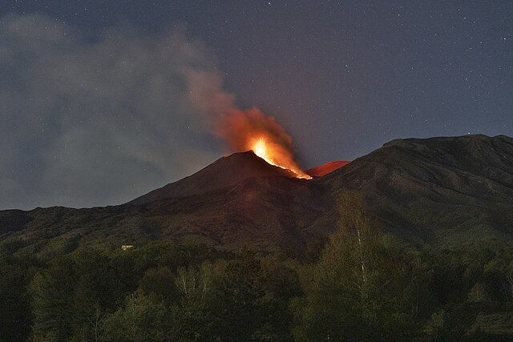

I parchi
Scopri la biodiversità dei quattro parchi

Parco del Paradiso
Il primo parco nazionale italiano, con ghiacciai, prati alpini e il simbolico stambecco.

Parco dell'Etna
Il vulcano attivo più alto d'Europa, con paesaggi unici, crateri spettacolari e biodiversità vulcanica.

Parco del Pollino
Un’area montuosa tra Basilicata e Calabria, con pini loricati, gole profonde e panorami mozzafiato.

Parco delle Dolomiti
Patrimonio UNESCO con cime imponenti, fiori rari come la stella alpina e paesaggi rocciosi unici.